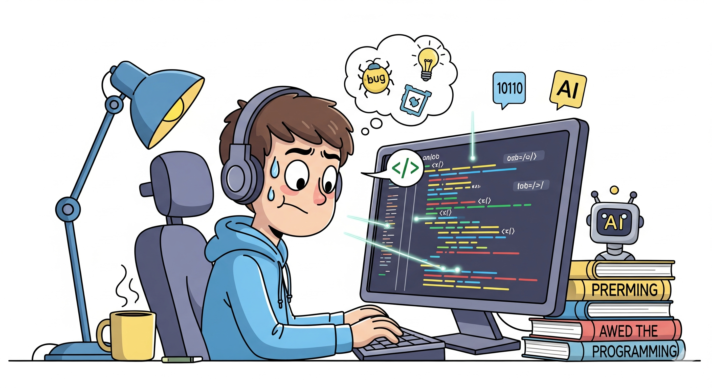

Napoleón Díaz Nuila
Sobre Mí
Soy José Napoleón Díaz Nuila Cerritos, un joven estudiante de Ingeniería de Software y Negocios Digitales en la ESEN. Actualmente, busco especializarme en ciberseguridad o desarrollo full-stack para definir mi futuro profesional. Aunque nací en Texas, Estados Unidos, mis raíces son de El Salvador, ya que mis padres, Napoleón Díaz Nuila y Claudia Cerritos, son de este país. Por esta razón, tengo doble nacionalidad.

Habilidades
A lo largo de mi formación, he desarrollado un conjunto de habilidades técnicas que abarcan tanto el desarrollo como el análisis de datos. Poseo experiencia en la gestión de bases de datos utilizando Microsoft SQL Server y MariaDB, además de dominar lenguajes de programación como Python y Java. También he adquirido conocimientos básicos de C#. Fuera del ámbito de la programación, complemento mis habilidades con el uso de herramientas como Photoshop y Excel.
